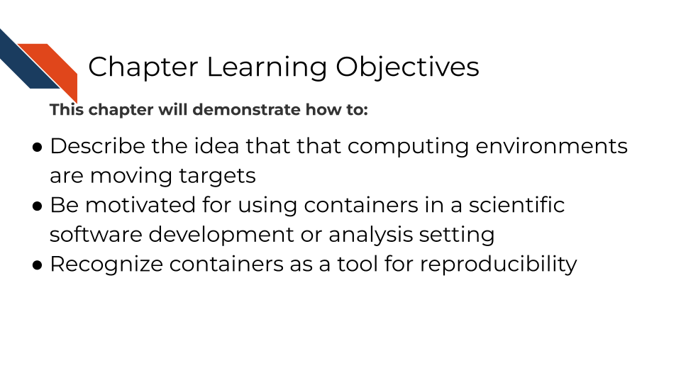
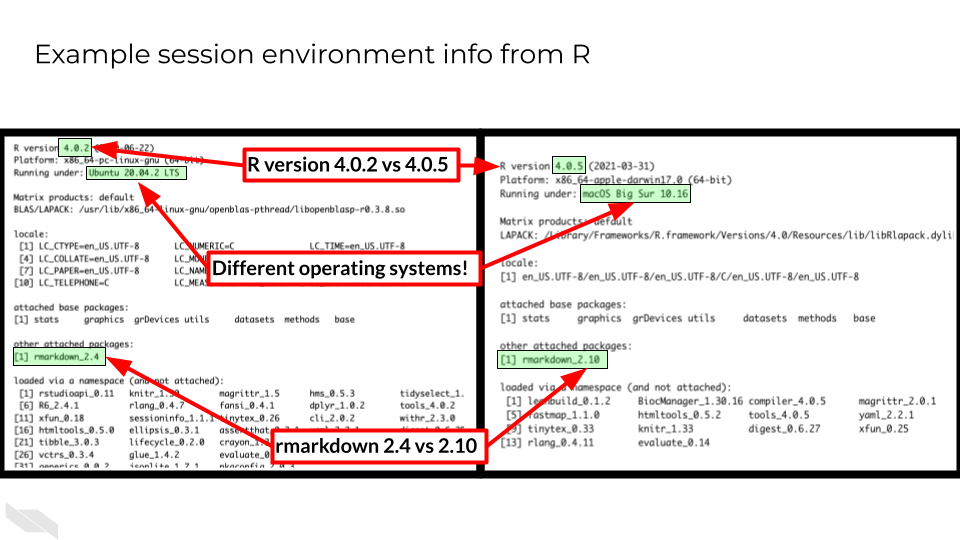
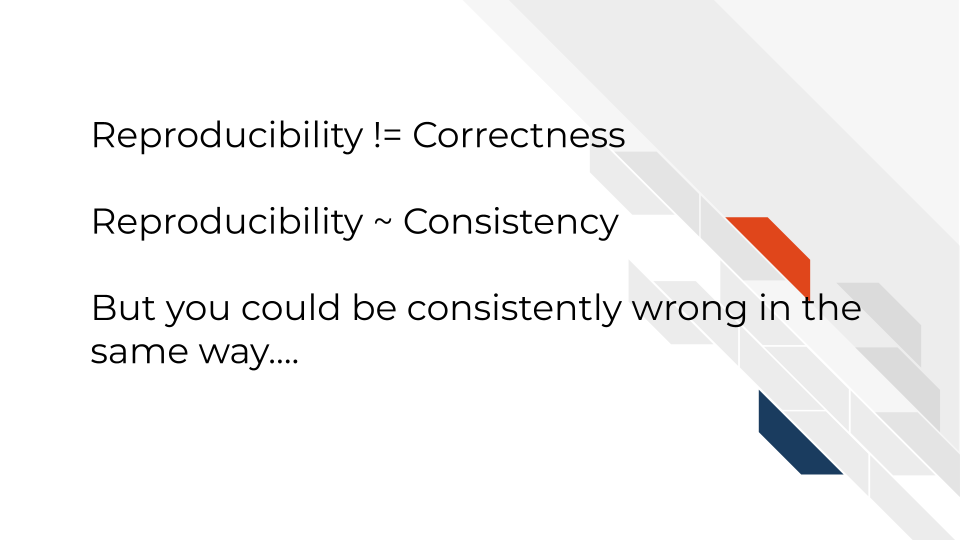
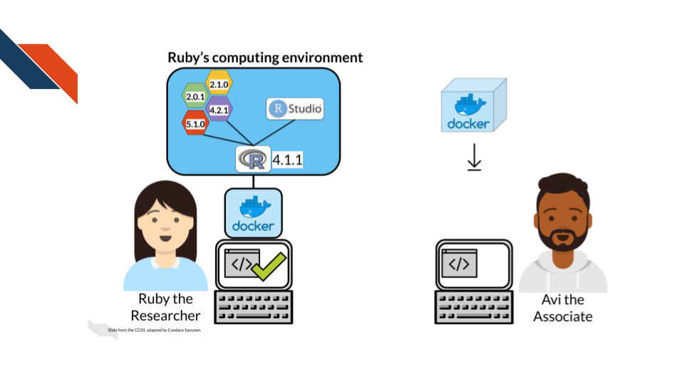
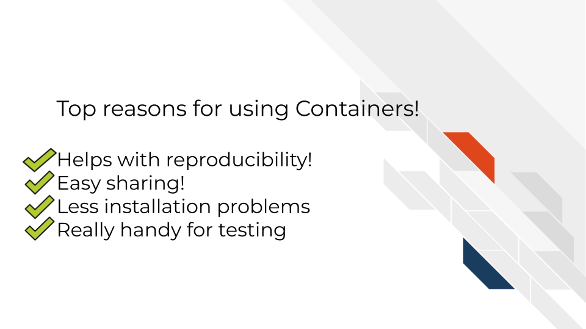

2 Why Containers?
2.1 The problem
In today’s data driven world, science is driven by computer work. But each of these computers is unique. This goes far beyond “Mac vs PC”. Every computer has a special configuration of software and software versions that is installed on it. Some of this is determined by the user of the computer, some due to the design by the company that builds and sells the computers, and some is even controlled by institutions and their IT departments that manage the computers.
Software programs can give us a concrete example of what differing computing environments can look like by printing out this information. This side-by-side example below shows two different computers’ computing environments. This printout comes from using sessionInfo() in the R programming language. You can see that not only do these two computing environments differ by operating system, but also by software packages installed, software packages loaded, and the versions of these software packages.

Not only are our computers very unique at any one point in time, but as time moves forward computers and the software environments change very rapidly. Some of this happens through intentional installations of programs by computer users and some are automatic software updates that they may not be aware of that are instigated by the developers of the hardware and software that make up the computer.
Computing environments are a moving target.
This can be a real problem for science because prior research has shown that these computing environments can affect results (Beaulieu-Jones and Greene 2017). In a genomic analysis for example, where the output might be a list of genes, differing computing environments may result in different numbers of significant genes!
2.2 Containers as an aid for reproducibility
It turns out computing environments are another variable in reproducibility.
For the purposes of informatics and data analysis, a reproducible analysis is one that can be re-run by a different researcher and the same result and conclusion is found.

In science, more variables means we’re lacking true clarity in what we are observing. More variables means things are messier. And reproducibility is the pillar of how science works.
Science progresses when data and hypotheses are put through these levels thoroughly and sequentially. If results are not repeatable, they won’t be reproducible or replicable.
An important note: although your results can be reproducibly wrong (you’re coming to a faulty conclusion consistently) they can NOT be irreproducibly right.

If we control the computing environments, that is one less variable we need to deal with in our science. Control the computing environment = That much more reproducible science.
We could think of impractical ways to control our computing environment: We could have one laptop that we ship back and forth between all our collaborators. Although this may make the computing environment slightly more controlled, clearly it is not a practical solution
That’s where containers come in.
A container is kinda like your computer is running a computer inside of it. It is isolated from the rest of your computer so your science can be more reproducible.
Containerization allows computing environments to be shared over the internet easily using libraries like Docker Hub.

Sharing computing environments and using those shared environments guarantee that the same computing environment is being used no matter where the analysis is being run.

And containerization works for aiding in reproducibility as shown by (Beaulieu-Jones and Greene 2017)
When a container is used, an aspect of variability in scientific analysis – the computing environment – is controlled for, the results are more reproducible!
2.3 Top reasons for containers!
But more than this, there are even more benefits to using containers:
Installing software can be a huge headache. Bioinformatics involves using software that is often fringe and developed and maintained by small teams – or sometimes that software isn’t maintained at all. This means installation can take a lot of valuable time that scientists often don’t have.
2.3.1 Unit Testing
You may not think of yourself as a software developer if you primarily write code for analyses. But this is still software! Just a different kind. In fact any kind of scientific code can still benefit from testing and automation. Our companion course about GitHub Actions and Continuous Integration / Continuous Deployment principles go into more detail about this.
But containers and automated testing of code go hand in hand. Rather than having your collaborator test it, it may be worth your while to have the code automatically tested, or the analysis automatically re-run upon the creation of a pull request.
Unit testing then is a way to test each individual component of a code base. Whatever the smallest unit you can break your code down into should be tested. Each function should have a reproducible example that is re-run upon introducing new changes in a pull request. This way it will save you time by letting you know which part of the code may have broken with new changes.
Containers assist with unit testing by allowing for a standard computing environment as well as ways to easily test code as it would be run in different operating systems: Macs, PCs, Linuxes, etc.
To summarize:

2.4 How does this work?
Images are like a snapshot of a computing environment. It’s frozen but can accurately depict what’s in the environment.
The image is what is easily shareable. There are huge repositories or libraries where you can find all kinds of images that folks around the world have made – each with a different configuration and purpose.

From the image, a container can be built. A container is then where you can work and do science (or other things). You can run scripts, interact with files, etc. All the things you would do on your computer, you do in the container. But the container acts as a separate and controlled environment, ensuring that the computing environment contains the intended software.
Basically going from image to container is like this scene from Mary Poppins where Mary Poppins, Bert, and the kids seemingly jump onto a chalk drawing of the English countryside, but instead of remaining standing on the pavement in the city park, they end up in new outfits standing in the English countryside. The chalk image that Bert drew led to a fully functioning landscape.
This course’s goal is to make learning containers go down like a spoonful of sugar.
Beaulieu-Jones, Brett K, and Casey S Greene. 2017. “Reproducibility of Computational Workflows Is Automated Using Continuous Analysis.” Nature Biotechnology 35 (4): 342–46. https://doi.org/10.1038/nbt.3780.